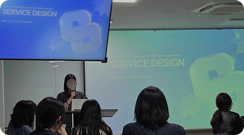
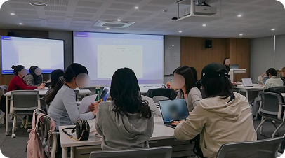
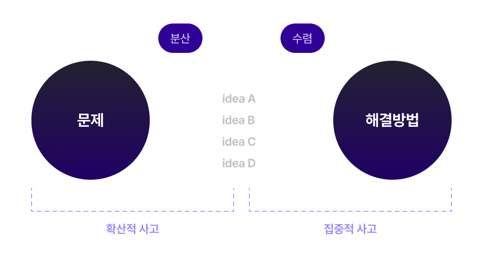

현직자와 특강 & OB 네트워킹
실무자와 크리솔 OB의 생생한 경험을 듣고, 크리솔 커뮤니티를 통해 함께 성장합니다.
국내 최초의 대학생 서비스디자인학회로서,
창의적으로 사고하는 방법을 탐구합니다.

실무자와 크리솔 OB의 생생한 경험을 듣고, 크리솔 커뮤니티를 통해 함께 성장합니다.
서비스디자인 프로세스를 통해 사고하는 방법을 배우고, 문제의 본질을 발견해 새로운 경험을 만들어갑니다.

팀별로 주제를 정해 리서치부터 프로토타입까지 완주합니다. 최종 발표에서는 현직 전문가의 피드백을 받아요.

학술부의 강의 교육을 통해 서비스디자인의 이론적 지식을 학습합니다.
실습 시간 팀별 활동을 통해 서비스디자인을 실현해 나갑니다.
현직 전문가분들의 조언과 현업에 관한 생생한 이야기를 들을 수 있습니다.
학회원끼리 팀을 이루어 프로젝트를 진행하고, 마지막 날 최종 발표를 합니다.
네, 열정만 있다면 전공과 경험에 관계없이 지원할 수 있어요.
학술 세션에서 기초 개념부터 단계별로 함께 배워나갑니다.
아니요, 서울에서 활동 가능한 4년제 대학 재학생 및 휴학생이라면 환영합니다.
선택 사항입니다. 링크 첨부나 메일 발송을 통해 제출해 주시길 바랍니다.
온라인 화상면접으로 진행됩니다. 지원 시 참여 가능한 일시를 선택해 주세요.
정규 세션은 매주 1회 이루어지며, 교육 후 팀별 프로젝트 실습을 진행해요.
한 학기 동안 하나의 프로젝트를 팀과 함께 완성합니다.
팀별로 해당 기수 주제에 맞춘 팀별 주제를 선정하고, 리서치부터 서비스 기획까지 직접 수행해요.
최종 발표에서는 교수님 및 현직 전문가의 피드백을 받을 수 있습니다.
서울 내 공유 오피스 혹은 성신여대 스마트혁신 창업센터에서 진행됩니다.
보통 격주로 진행되며, 상세 예상 일정은 모집안내 페이지를 확인해주시길 바랍니다.
성실히 수료한 학회원은 OB로 활동할 수 있어요.
특강, 네트워킹 등 크리솔 커뮤니티로 이어집니다.
아니요, 한 학기 활동 후 휴회 할 수 있습니다. 단, 수료증은 두 기수 모두 활동해야만 받을 수 있습니다.